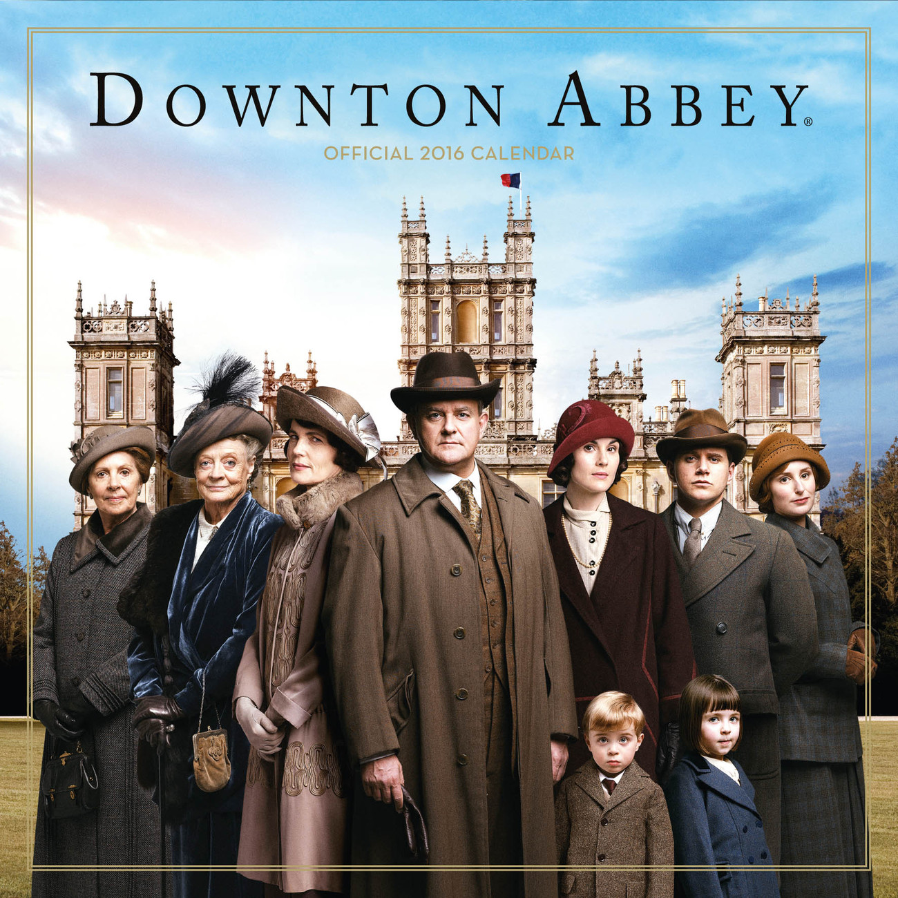

The Crawleys', their servants and the difficulties of being a modern aristocrat
Downton Abbey is a British period drama created by Julian Fellowes that follows the aristocratic Crawley family and the servants who run their grand Yorkshire estate in the early 20th century. Beginning in 1912 with the sinking of the Titanic, the series intertwines personal dramas with sweeping historical events, exploring themes of class, duty, tradition, and change. The show’s richly drawn ensemble—led by figures like the dignified Lord Grantham, the sharp-tongued Dowager Countess, and the modern-minded Lady Mary—anchors its elegant storytelling.
One of the series’ hallmarks is its dual perspective: life “upstairs” among the aristocracy and “downstairs” among the staff. The butler Carson, housekeeper Mrs. Hughes, and maids and footmen each carry their own hopes, secrets, and loyalties, creating a layered narrative where small personal victories feel as significant as grand social shifts. The show deftly portrays the delicate interdependence between these worlds, balancing romance, rivalry, and humor.
Historically, Downton Abbey traces the impact of World War I, the Spanish flu, women’s suffrage, and social mobility on British society. As changing times challenge old hierarchies, characters evolve—some clinging to tradition, others embracing new opportunities. With sumptuous production design, memorable dialog, and a score that underscores both grandeur and intimacy, Downton Abbey became a global phenomenon, spawning films and enduring affection from audiences.